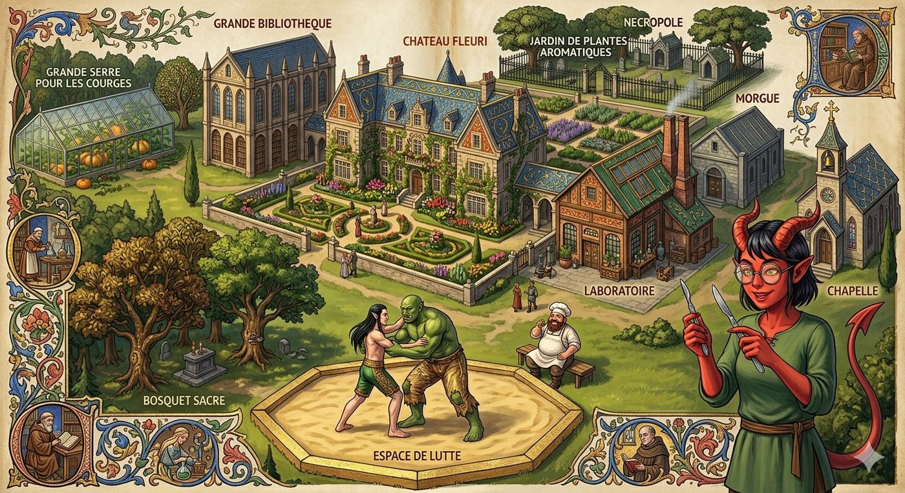

Le château de Garches

- Le domaine des héros. ⚑ Le domaine de Garches et les Landes Grises
- Ruines de l'ancienne capitale du duché de Garches, rasée en 699 CR par la Horde du Roi-Idiot. Le duc Isembard de Garches y meurt.
-
À deux ou trois jours de voyage au sud-est de Bourg-Preux. On les dit hantées.
-
Vers 830 CR : en partie reconstruit, devient monastère des Ascètes Éternels.
- Vers 846 CR : détruit par Eldric de Valombre.
- Aujourd'hui : restauré par les artisans du duc Ganelon de Bromaël. Habitants : Alistair, Gareth, Mélisande, la milice, et Pekko et Kila Mille-Peaux, les anciens serviteurs de l'Innommable. Le corps de l'Innommable y repose.
- Légende : passage vers le centre du monde. ⚑ La galerie vers le cœur du monde